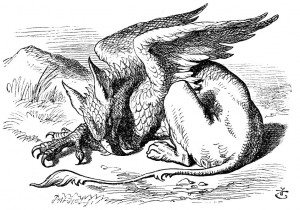

and all the players, except the King, the Queen, and Alice, were in custody and under sentence of execution.
Then the Queen left off, quite out of breath, and said to Alice, 'Have you seen the Mock Turtle yet?'
'No,' said Alice. 'I don't even know what a Mock Turtle is.'
'It's the thing Mock Turtle Soup is made from,' said the Queen.
'I never saw one, or heard of one,' said Alice.
'Come on, then,' said the Queen, 'and he shall tell you his history,'
As they walked off together, Alice heard the King say in a low voice, to the company generally, 'You are all pardoned.' 'Come, THAT'S a good thing!' she said to herself, for she had felt quite unhappy at the number of executions the Queen had ordered.
They very soon came upon a Gryphon, lying fast asleep in the sun. (IF you don't know what a Gryphon is, look at the picture.) 'Up, lazy thing!' said the Queen, 'and take this young lady to see the Mock Turtle, and to hear his history. I must go back and see after some executions I have ordered'; and she walked off, leaving Alice alone with the Gryphon. Alice did not quite like the look of the creature,
but on the whole she thought it would be quite as safe to stay with it as to go after that savage Queen: so she waited.
The Gryphon sat up and rubbed its eyes: then it watched the Queen till she was out of sight: then it chuckled. 'What fun!' said the Gryphon, half to itself, half to Alice.
'What IS the fun?' said Alice.
'Why, SHE,' said the Gryphon. 'It's all her fancy, that: they never executes nobody, you know. Come on!
'Everybody says "come on!" here,' thought Alice, as she went slowly after it: 'I never was so ordered about in all my life, never!'
They had not gone far before they saw the Mock Turtle in the distance, sitting sad and lonely on a little ledge of rock, and, as they came nearer, Alice could hear him sighing as if his heart would break. She pitied him deeply. 'What is his sorrow?' she asked the Gryphon, and the Gryphon answered, very nearly in the same words as before, 'It's all his fancy, that: he hasn't got no sorrow, you know. Come on!'